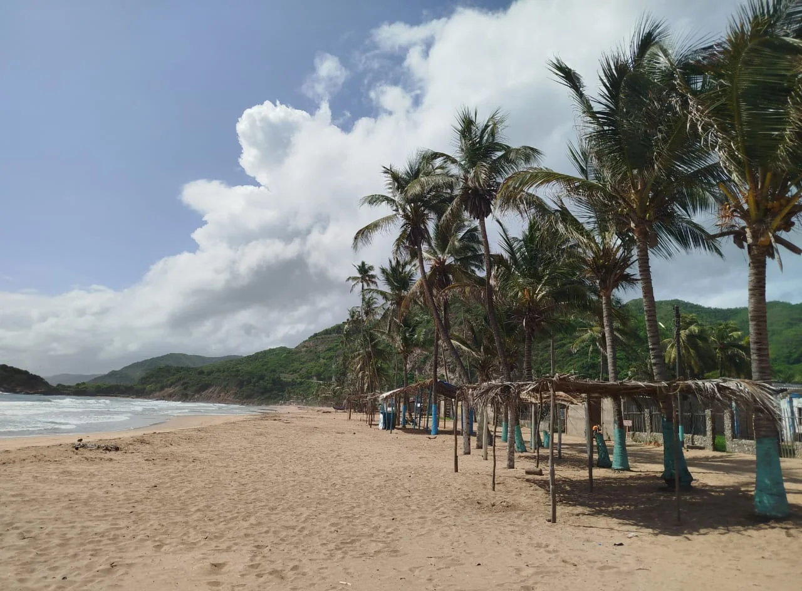
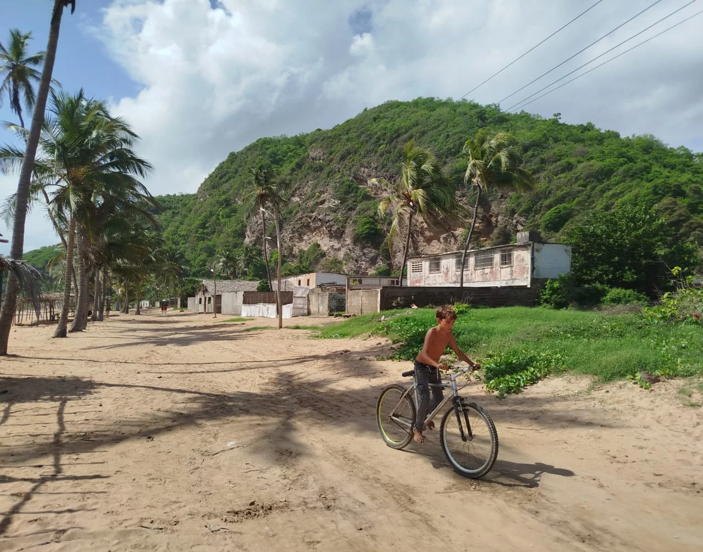
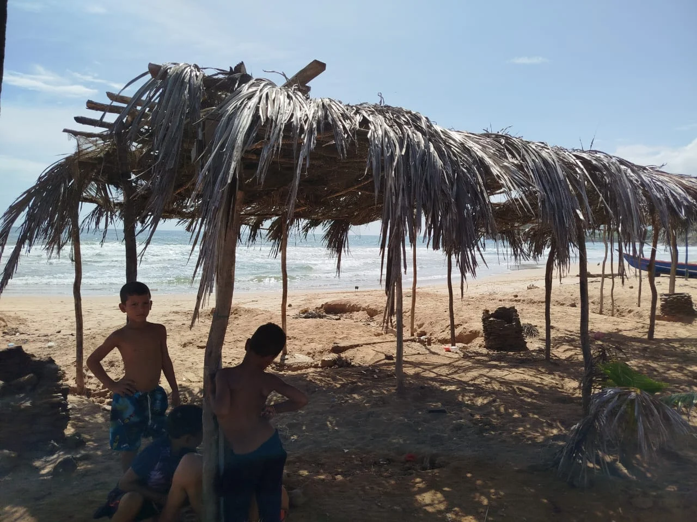
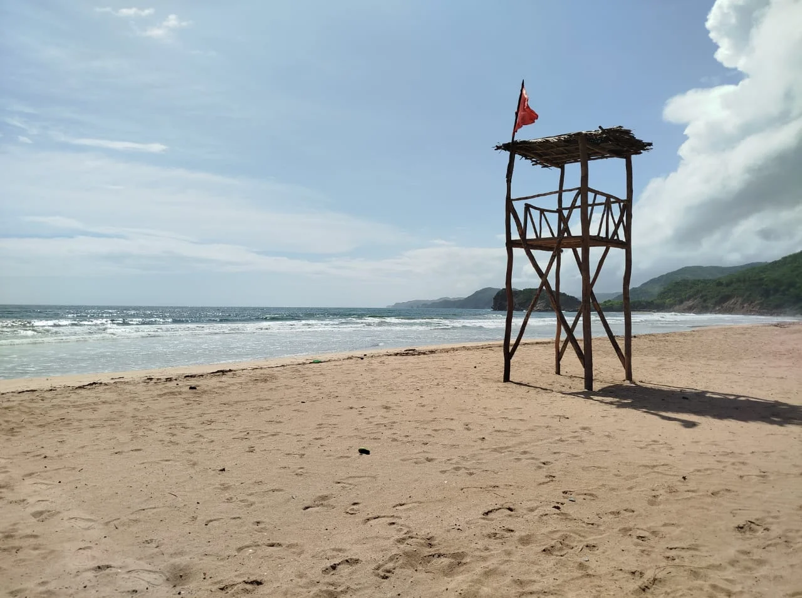
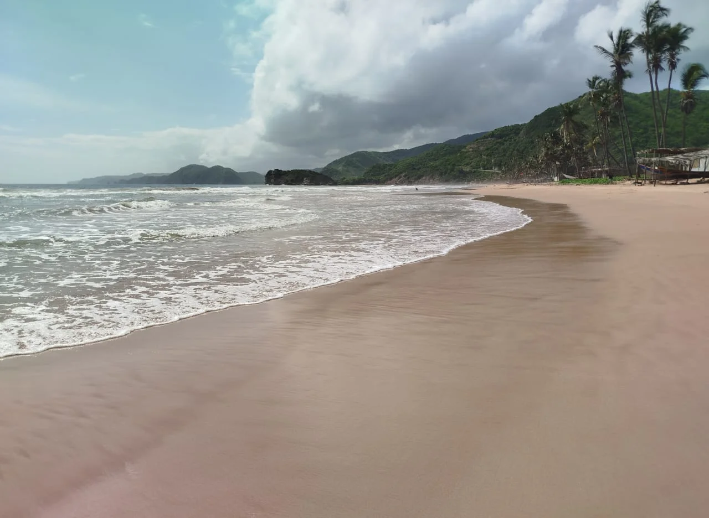
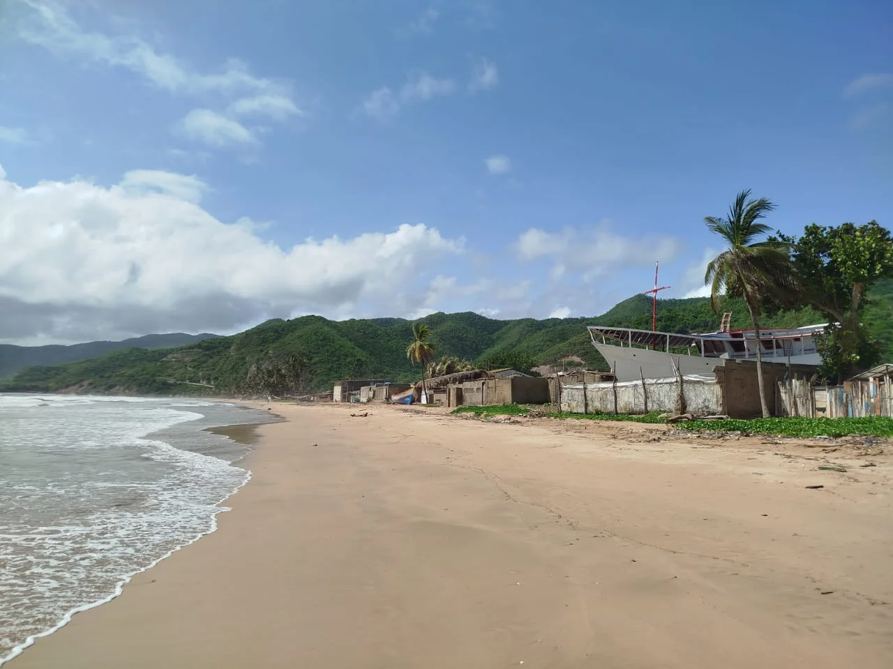
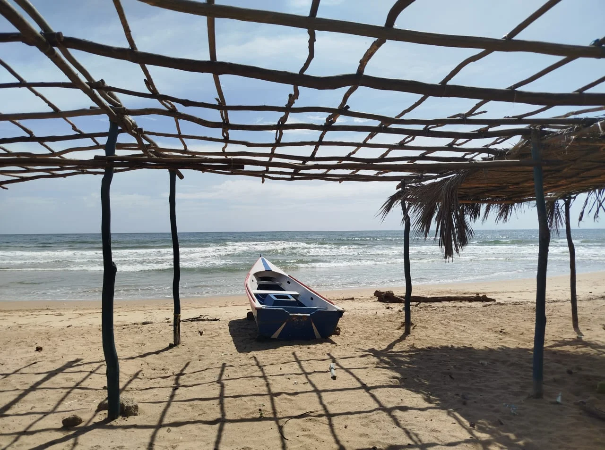
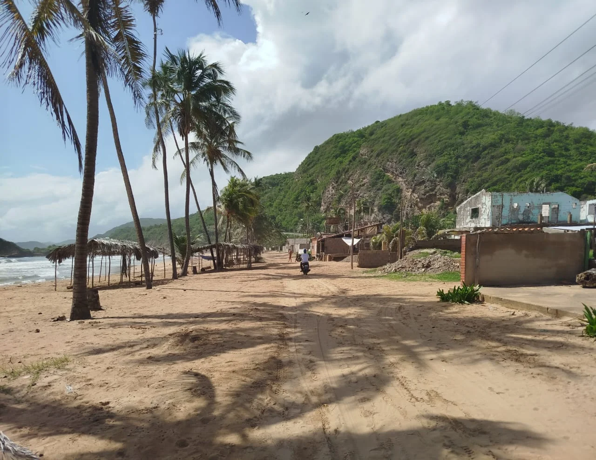
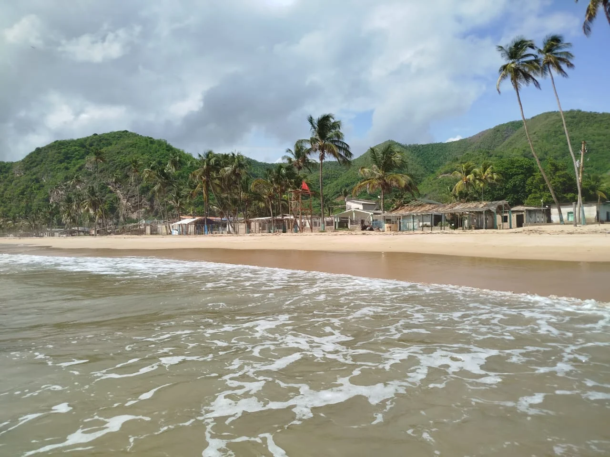

Los Cocos es un destino con carácter que ofrece una experiencia costera con un encanto particular. Sus extensas orillas de arena dorada se encuentran bordeadas por una abundante presencia de palmeras que proporcionan sombra natural, creando un ambiente tropical y relajado.




Uno de los atractivos de Playa Los Cocos son las cómodas churuatas que se distribuyen a lo largo de la orilla. Estas ofrecen refugio del sol y son ideales para relajarse, disfrutar de un picnic o simplemente contemplar el mar. Su diseño rústico se integra armoniosamente con el entorno natural.




Cómo Llegar
Tome la Vía Nacional de El Morro de Puerto Santo hacia Río Caribe. Gire a la izquierda en la entrada del sector "Los Cocos". La entrada a la playa estará inmediatamente a su derecha.
Mejores Días
Los días entre semana son ideales para visitar Playa Los Cocos, ya que la afluencia de turistas es menor, permitiendo disfrutar de un ambiente más tranquilo y relajado.
¿Por Qué Visitarla?
Playa Los Cocos ofrece una experiencia turística auténtica, con su extensa franja de arena, abundancia de palmeras y la presencia de churuatas que brindan comodidad y sombra.
La Playa de Los Cocos
A diferencia de otras playas, las aguas de Los Cocos no son tan tranquilas y se caracterizan por presentar corrientes que pueden ser un poco fuertes, lo que añade un elemento de precaución para los bañistas. Sin embargo, este dinamismo de las olas también contribuye al paisaje sonoro y visual de la playa.
El acceso a la playa es fácil gracias a una carretera que llega directamente hasta sus inmediaciones. Esta accesibilidad ha contribuido a que, históricamente, esta parte de la playa fuera el punto de mayor concentración de turistas durante las temporadas altas. En las imágenes se observa una vía de tierra que corre paralela a la playa, con algunas construcciones y viviendas a lo largo de su extensión. La combinación de su vasta extensión de arena, la presencia de palmeras, las churuatas disponibles y su fácil acceso, hacen de Playa Los Cocos un destino con personalidad propia en El Morro de Puerto Santo, atrayendo a aquellos que buscan un ambiente playero auténtico, con un toque de aventura en sus olas.
